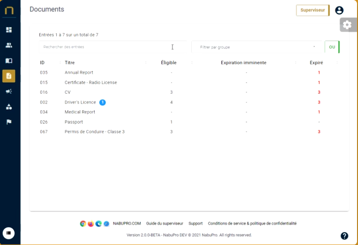

Centralisation de votre documentation
Nabu Pro est une plateforme tout-en-un qui regroupe tous vos documents, formations et communications internes pour une gestion simple et facile de tous vos processus de conformité et de compétences.
Voir nos fonctionnalités
